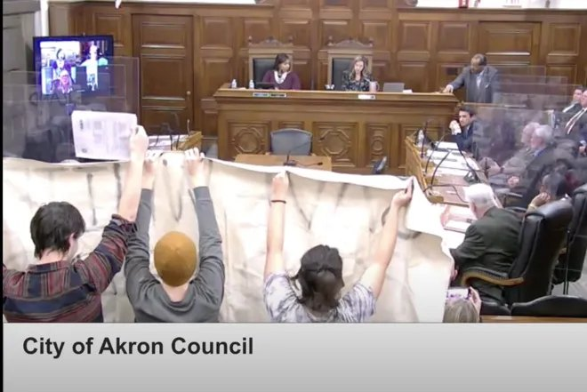

Timeline photos
I AM SO PROUD OF YOU.
Last night city council ignored the people and voted to force a half-baked, high-priced rental complex down the throats of citizens who have fought so systematically and respectfully to at least slow down the process.
I've been there.
We had hundreds of people come in support of the tent village we were running on my private land to only be ignored and shut down by city council.
The ward reps who voted in favor of the sale were: Lombardo, Sommerville, Freeman, McKitrick, Connor, Baylor, and Fusco.
These are important names to know because these people are nothing more than the mayor's lap dogs. They do whatever he tells them to do so that they can keep their cushy jobs.
While Shammas Malik voted against this bill the only thing he ever seems to focus on is how non-polite people are. Malik talked about “treating each other with dignity and respect, not arguing” and accepting outcomes even if there is disagreement.
He is a man who has no understanding what it is to a citizen of Akron that is completely ignored by its politicians.
These kinds of loses are demoralizing and fill a person with hopelessness. But, for at least a few of you, I hope it educates you about a corrupt system that must be changed.
You are so beautiful and so wonderful. You fill me with hope and inspiration. You ran your movement against this rental abomination beautifully.
I BEG YOU TO RUN FOR CITY COUNCIL.
Tara Mosley's seat is open because she is running for mayor.
Jeff Fusco is the ring leader of this dark order of fascists.
And the Sommerville family is notoriously known for only caring about one thing: the Sommerville family.
The next battle is May 2, 2023. That is the Democratic Primary where our next mayor and all city council members will be elected. Whoever wins that primary will win the general election in November.
PLEASE consider going to the Summit County Board of Elections and asking them about running for City Council. Don't run for mayor. We have enough candidates. You aren't going to win mayor.
City council members make about $34k a year, have incredible health insurance and get a free phone. And it is a PART TIME JOB. You genuinely could win this election.
PLEASE PLEASE PLEASE. Go to the Board of Elections and learn about how to run for city council. And if you have any questions you are always welcome to contact me.
Here is the Board of Elections Information:
Summit County Board of Elections
470 Grant Street
Akron, Ohio 44311
Phone:330.643.5200 Fax:330.643.5422
Send an email to summit@sos.state.oh.us